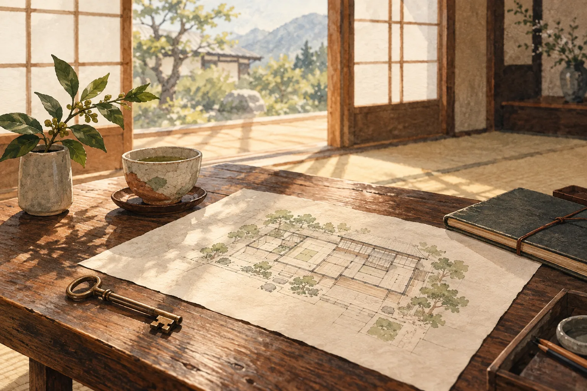

「今のうちに、できることをしておきたい」
後継者のことはまだ決まっていない。でも、もし将来、宿を譲るときや売るときが来たら—— その時に「良い状態」であればあるほど、選択肢は広がります。 建物の手入れ、お客様からの評価、ネット上での見え方。今のうちに整えておくことが、 数年後の宿の価値を大きく左右します。
全国の古民家の宿とカフェを訪ね、建物と、そこを営む人の話を届けます。
FOR INN & CAFE OWNERS
宿の魅力を伝える取材、ウェブサイトやSNSの整備、これからの宿づくり。今できることを、一緒に考えます。相談とサポートは無償です。
かくれ宿は、これまで千葉県内の宿を取材し、オーナー様の想いに触れてきました。
その経験から見えてきたのは、「引退はまだ先だけど、なるべく良い状態で次に繋ぎたい」
という50〜60代のオーナー様の声です。私たちは、そんな前向きな想いに寄り添い、
宿の価値を一緒に育てていくパートナーになりたいと考えています。
後継者のことはまだ決まっていない。でも、もし将来、宿を譲るときや売るときが来たら—— その時に「良い状態」であればあるほど、選択肢は広がります。 建物の手入れ、お客様からの評価、ネット上での見え方。今のうちに整えておくことが、 数年後の宿の価値を大きく左右します。
私たちは、千葉県内の宿を実際に歩いて取材してきたメディアです。 今の若い世代が「行きたい」と感じる宿の空気感、写真の見せ方、情報発信の方法を 肌感覚で知っています。その視点を活かして、宿の魅力を引き出し、 次の世代のお客様に届くかたちに整えるお手伝いをします。
「無料」と聞くと、かえって不安になるかもしれません。
だからこそ、運営者が誰なのか、なぜ無料なのかを、正直にお伝えします。
千葉を拠点に、サステナビリティ領域の法人営業とコミュニティ運営を手がけるフリーランス。前職は地域の金融機関で、個人・法人のお客様を担当していました。「千葉のいい場所を、次の世代に残したい」という想いで、県内の宿を一軒ずつ訪ね歩いています。
正直にお伝えすると、私たち自身、いずれ千葉で体験型の宿を持ちたいと考えています。 そのために今、地域で宿を営む先輩方から現場を学び、長くお付き合いできる関係を築きたい—— それが、取材も支援も無料で行っている理由です。将来、事業の承継や協業といった話につながれば、 それはお互いにとって嬉しいこと。そうした下心も含めて、隠さずお話しします。 だからこそ、売り込みや、あとから請求される隠れた費用は一切ありません。
「かくれ宿」は、大手の宿泊掲載サイトには載らない、千葉県内の宿を一軒ずつ訪ね歩き、
オーナー様の声を直接お聞きしながら記事をつくってきたメディアです。
その積み重ねが、私たちの強みです。
民宿、古民家、一棟貸し、山小屋、町家など、千葉県内のさまざまなタイプの宿を直接取材。 オーナー様おひとりおひとりの想いやこだわりを、丁寧に記事として届けてきました。 この記事づくりのノウハウを、宿の魅力発信に活かします。
取材活動を通じて、デザインやデジタル発信に力を入れている宿泊施設のオーナー様とも 交流を重ねています。そうした最新の取り組みの中から、千葉の宿にも取り入れられそうな アイデアを、具体的なかたちでご提案します。
運営チームは、実際に旅をして「泊まりたい」と感じる宿を選ぶ世代でもあります。 写真の撮り方、SNSでの見せ方、予約のしやすさなど、若い世代が宿を選ぶときに 何を見ているのかを、肌感覚でお伝えできます。
取材・撮影・執筆、そしてウェブサイトやSNSの整備支援は、すべて無償で対応しています。 「まずは話を聞いてみたい」という段階からで構いません。 費用面の不安なく、お気軽にご相談ください。
宿の状況やオーナー様のご希望に合わせて、必要なメニューだけをお選びいただけます。
まずは無料相談で、現状とゴールを一緒に整理しましょう。
今の若い世代が「また来たい」と感じる宿には、共通する空気感があります。 客室や共用部の使い方、写真に映える設え、滞在中の体験設計など、 今の宿の魅力を活かしながら、改善できるポイントを一緒に見つけます。
Instagramや note などでの発信を、無理なく続けられる形でサポートします。 写真の撮り方、投稿の組み立て方、宿の「らしさ」が伝わる言葉選びまで、 ゼロから一緒に整えていきます。
「電話のみ」の予約を、ウェブフォームや予約システムに切り替えるお手伝いをします。 ITが苦手でも大丈夫です。最小限の手間で運用できる仕組みを、一緒に選び、 設定までサポートします。
「かくれ宿」本体での取材・記事掲載を通じて、宿の魅力を広く伝えます。 オーナー様の人柄やストーリーも含めて、丁寧に届けることで、 宿の認知と評価を少しずつ積み重ねていきます。
「いつか譲りたい・売りたい」と考えているけれど、何から手をつければいいか分からない—— そんな段階でも構いません。今のうちにできる準備や、価値を高めるための優先順位を、 一緒に整理します。専門的な手続きが必要な場合は、適切な専門家へのご紹介も可能です。
すべて無料・無理な勧誘はありません。まずはお気軽にお話しください。
宿の概要と、気になっていることを簡単にお書きください。
オンラインまたは現地で、現状やご希望を詳しくお伺いします。
優先順位をつけた支援プランを、無理のない形でご提案します。
取材・SNS・デジタル化など、必要なメニューから着手します。
現在、支援実績を積み重ねています。
今後、実際にサポートさせていただいた宿の事例を、こちらでご紹介していく予定です。
築年数の古い客室の見せ方や、共用部の使い方について、若い世代の視点からご提案。 合わせてInstagramでの発信方法も整理し、今後の予約状況の変化を追っていく予定です。

これまで電話のみだった予約受付に、簡易なウェブフォームを導入するサポートを予定。 合わせて「かくれ宿」での取材記事も掲載し、宿の魅力を発信していきます。
※ 上記は今後想定している支援内容のイメージです。実際の支援事例につきましては、 実施後にオーナー様のご了承を得たうえで、随時掲載してまいります。
支援事例はこれからですが、宿の取材・記事づくりは、すでに千葉県内で実際に行っています。
私たちがどんな目線で宿を見て、どう言葉にしているか——まずは取材記事をご覧ください。
サポートを受けていただいたオーナー様の声を、今後こちらでご紹介していく予定です。
まずは、私たちが取材を通じてよく耳にする「宿オーナー様の想い」をご紹介します。
後継者のことはまだ決めていないけれど、いつか誰かに譲るときのために、 今の宿の状態を良くしておきたい。そう考えている宿主さんは、少なくありません。
SNSは気になっているけれど、何を、どう発信すればいいのか分からない。 そんなお声を、これまでの取材先で多くお聞きしてきました。
ネット予約があれば便利だとは思うけれど、自分では設定できない。 そうした「あと一歩」を、私たちがお手伝いできればと考えています。
ご相談前によくいただくご質問をまとめました。
「話を聞いてみたい」という段階で構いません。
まずは下記フォームより、宿の状況やお悩みをお知らせください。
無料相談のお申し込みは、Googleフォームから送れます。入力は1分ほど。内容を確認のうえ、3営業日以内にご返信いたします。
無料相談を申し込む →フォームが開かない場合は kakureyado.official@gmail.com までメールでどうぞ。